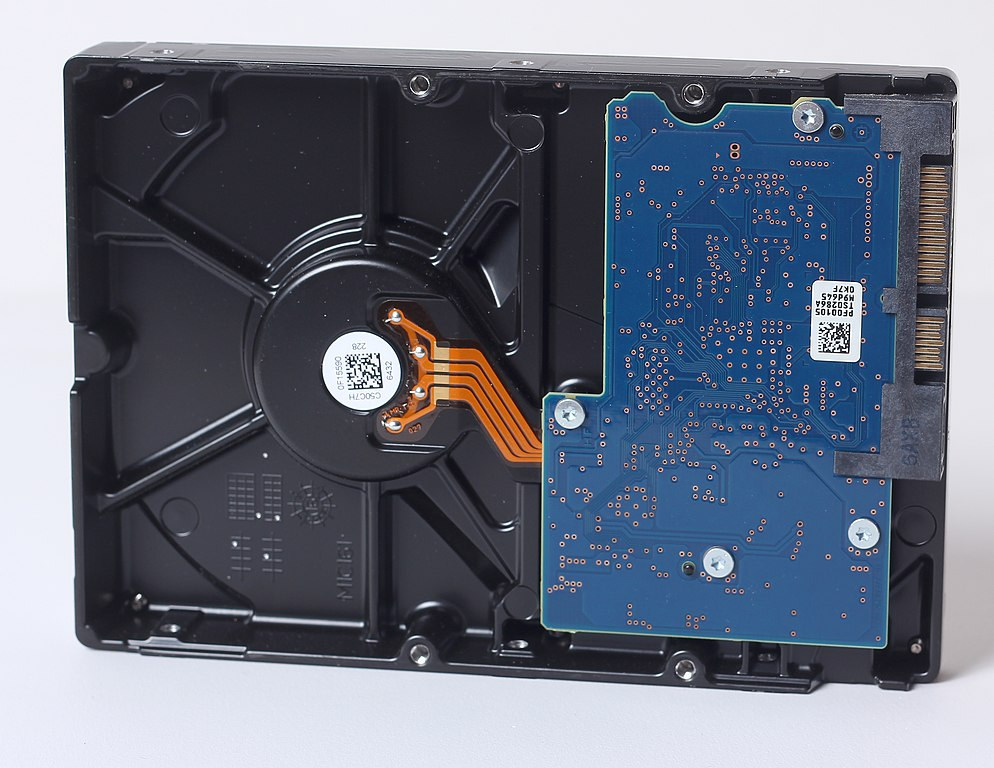
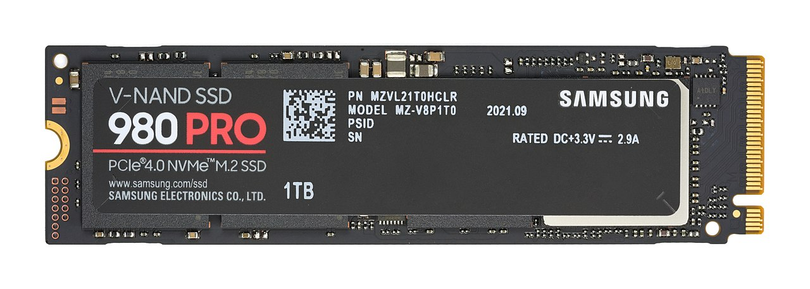
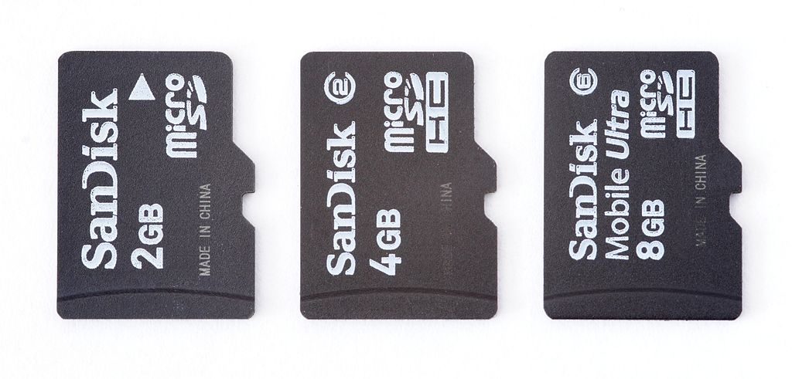

Almacenamiento de información¶
Los ordenadores son dispositivos que tratan y transforman información, por lo que los dispositivos que almacenan esta información son fundamentales para determinar la capacidad y velocidad del ordenador.
Índice de contenidos:
Clasificación de dispositivos de almacenamiento¶
Según su posición y vinculación al ordenador local:
Almacenamiento primario
- Memoria RAM
- Memoria caché
- Búfer de datos
Almacenamiento secundario
- Memoria ROM
- Disco de estado sólido SSD
- Disco duro magnético HDD
Almacenamiento externo
- Unidades ópticas CD-ROM, DVD, Blu-ray
- Memoria USB
- Tarjetas SD
- Cinta magnética
- Discos flexibles
Almacenamiento virtual
- Equipos NAS
- Almacenamiento en la nube
Según su método de almacenamiento:
Dispositivos de estado sólido
- Memoria RAM
- Memoria ROM
- Unidad de estado sólido SSD
- Memorias USB
- Tarjetas SD
Dispositivos de almacenamiento magnético
- Discos duros HDD
- Cinta magnética
- Discos flexibles
Dispositivos de almacenamiento óptico
- Discos CD-ROM
- Discos DVD
- Discos Blu-ray
Almacenamiento primario¶
Las memorias de almacenamiento primario son los dispositivos que contienen la información con la que el procesador está trabajando. Son las memorias más rápidas y cercanas a la unidad central de proceso.
- Memoria RAM
La memoria RAM o memoria de acceso aleatorio es una memoria de almacenamiento temporal para los programas y datos que maneja la CPU.
La memoria RAM debe ser muy rápida para no ralentizar la velocidad de la unidad central de proceso (CPU). Una memoria RAM actual puede transferir más de 20 gigabytes por segundo.
También debe tener suficiente tamaño para contener todos los programas, apps y datos que se estén ejecutando de forma simultanea en el ordenador. En 2022, un smartphone medio suele tener de 4 a 8 gigabytes de RAM y un ordenador personal, de 8 a 16 gigabytes de RAM.
La desventaja de la memoria RAM consiste en que pierde sus datos cuando se apaga la alimentación del ordenador. Además suele ser mucho más cara que las memorias de almacenamiento secundario, 5€/gigabyte de una memoria RAM frente a 0,02€/gigabyte de un disco duro en 2022.
- Memoria caché
La memoria caché es un tipo de memoria rápida que almacena temporalmente los contenidos leídos de la memoria RAM para que las posteriores peticiones de lectura se puedan atender con mayor rapidez.
Funciona de manera semejante a la memoria RAM, pero es de menor tamaño y de acceso más rápido. Surgió cuando la memoria RAM ya no fue capaz de trabajar a la misma velocidad del procesador y sirve para que el procesador reduzca el tiempo de acceso a los datos y programas ubicados en la memoria RAM que se utilizan con más frecuencia.
Hoy en día la memoria caché de la RAM suele estar integrada dentro del propio procesador y suele tener un tamaño de varios megabytes.

Almacenamiento secundario¶
Los dispositivos de almacenamiento secundario de un ordenador son memorias no volátiles, es decir, que almacenan datos a pesar de que el ordenador no tenga alimentación. Se suelen instalar de forma permanente en el interior del ordenador para que almacenen el sistema operativo y los diferentes programas y datos de uso habitual.
Los dispositivos de almacenamiento secundario son más lentos que los de almacenamiento primario. Como contrapartida tienen mayor capacidad de almacenamiento.
- Memoria ROM
La memoria ROM (Read Only Memory) o memoria de solo lectura es una memoria de almacenamiento permanente de programas y datos del ordenador. En esta memoria se almacena el denominado Firmware, programas de solo lectura que manejan un dispositivo.
Muchas memorias ROM que se utilizan hoy en día no son realmente de solo lectura. Suelen estar basadas en tecnología Flash y se pueden reescribir múltiples veces. Por esta razón, hoy en día a esta memoria también se la denomina memoria Flash.
Las memorias Flash suelen ser más lentas, más sencillas y de menor capacidad que las memorias incluidas en las unidades SSD, aunque ambas estén basadas internamente en una tecnología similar.
Ejemplos de memoria ROM son la memoria del BIOS (Sistema Básico de Entrada Salida) de un ordenador personal, o el programa interno de dispositivos como un router, un mando a distancia, etc.

Memoria ROM Phoenix BIOS de una placa base de ordenador personal.¶
Raimond Spekking, CC BY-SA 4.0, via Wikimedia Commons.- Unidad de disco duro (HDD)
La unidad de disco duro es un tipo de memoria secundaria basada en un disco giratorio impregnado con una sustancia magnética que permite almacenar información de forma permanente.
Los discos duros son los encargados de almacenar los programas y los datos para que se mantengan mientras el ordenador está apagado.
Cuando un usuario de ordenador quiere utilizar un programa o visualizar un archivo de datos, la información se lee desde el disco duro y pasa a escribirse en la memoria RAM para que la CPU pueda trabajar con ellos.
Los discos duros llevan muchos años en el mercado (desde 1956) por lo que se basan en tecnologías asentadas y muy optimizadas. A pesar de ello, se van sustituyendo poco a poco por los SSD por las múltiples ventajas que presentan estos últimos.
Unidad de disco duro (HDD) con conexión SATA, vista desde abajo.¶
Dmitry Makeev, CC BY-SA 4.0, via Wikimedia Commons.- Unidad de estado sólido (SSD)
La unidad de estado sólido es un tipo de memoria secundaria basada en chips de tecnología Flash que almacenan información de forma permanente.
Son más modernos en el mercado (desde 1989) que los discos duros y tienen menos capacidad a igualdad de precio, pero van mejorando rápidamente con los años y están sustituyendo poco a poco a los discos duros tradicionales.
Unidad de almacenamiento de estado sólido (SSD) con conexión PCI Express.¶
D-Kuru, CC BY-SA 4.0, via Wikimedia Commons.- Comparativa entre HDD y SSD
- Ventajas de los SSD:
- Mayor velocidad de transferencia. Más de 600 megabytes/s de un SSD frente a 100 megabytes/s de un HDD.
- Menor tiempo de acceso. 0,1 milisegundos de un SSD frente a 10 milisegundos de un HDD.
- Mayor resistencia a los golpes y a las vibraciones.
- Menor tasa de fallos de los SSD al no tener partes móviles.
- Menor consumo eléctrico. 4W ó 5W de un SSD a máximo rendimiento frente a 6W a 10W de un HDD.
- Menor tamaño físico.
- Menor ruido generado.
- Desventajas de los SSD:
- Menor resistencia a un gran número de escrituras.
- Mayor precio por gigabyte. 140€/TB de un SSD frente a 24€/TB de un HDD en 2022.
- SMART
SMART es una tecnología que implementan los discos duros y las unidades de estado sólido. Es un sistema de detección temprana de fallos que permite conocer con antelación si un disco duro da señales de fallar próximamente.
La tecnología SMART monitoriza parámetros de la unidad como su temperatura, sectores defectuosos, cantidad de datos escritos, errores de lectura, tiempo de funcionamiento, número de arranques, etc. Aunque no es capaz de detectar todos los fallos posibles, sí permite avisar ante la mayoría de los fallos debidos a una degradación de la unidad.
Existen varios programas que permiten leer los parámetros SMART de una unidad de almacenamiento. Algunos programas de monitorización son:
- RAID
Un sistema RAID (matriz redundante de discos independientes) es una tecnología que permite unir varias unidades de disco duro (HDD) o unidades de estado sólido (SSD) para conseguir aumentar sus prestaciones. Se utiliza en servidores de datos y en ordenadores de altas prestaciones. Se necesita una controladora RAID especializada para conectar los discos al ordenador.
En un primer nivel RAID, el sistema operativo ve una sola unidad donde en realidad hay varios discos duros. La velocidad de transferencia total aumenta al unir las velocidades de transferencia de cada uno de los discos.
En niveles RAID posteriores, se utiliza un disco para almacenar datos redundantes de paridad. Esto permite que los datos no se pierdan ante el fallo de una de las unidades. Al detectar una unidad dañada, ésta se puede cambiar por otra nueva y el sistema recuperará automáticamente los datos perdidos a partir de los datos redundantes.
- Búfer de datos
Un búfer de datos es un espacio de memoria temporal que almacena datos de lectura o de escritura que se dirigen a un periférico. De esta forma se acelera el funcionamiento del procesador y se evita que un dispositivo pierda datos durante una transferencia de datos irregular.
Los búfer de escritura para un dispositivo más lento que el procesador, como un disco duro o un pendrive, almacenan varios megabytes de datos que son enviados en ráfagas rápidas por el procesador para, más tarde, escribirlos en el dispositivo de almacenamiento a menor velocidad y de manera continua.
Los dispositivos de entrada, como los teclados o ratones, también tienen un búfer de lectura que va almacenando los datos que envían los periféricos hasta que el procesador los lee rápidamente. De esta manera el procesador principal no tiene que estar atendiendo continuamente a un dispositivo lento, sino que lo atiende a ráfagas rápidas y sin esperas.
Los búfer de datos suelen encontrarse dentro de los periféricos de entrada/salida y de los medios de almacenamiento.
{kind=link}
{kind=link}
Almacenamiento externo¶
Los dispositivos de almacenamiento externo se pueden desconectar con facilidad del ordenador para ser transportados.
Su velocidad suele ser más lenta que la de los anteriores métodos de almacenamiento interno, pero presentan la ventaja de su mayor movilidad y facilidad de transporte.
- Memoria USB
La memoria USB es una memoria externa basada en tecnología flash con conexión al ordenador de tipo USB.
Su capacidad máxima aumenta con los años debido a la ley de Moore. En 2022 se puede comprar una memoria USB de 512 gigabytes por un precio de unos 40 Euros.
La velocidad de lectura suele ser menor que la de un disco duro y la velocidad de escritura suele ser mucho menor en la mayoría de los dispositivos.
- Tarjeta SD
La memoria en tarjeta SD se basa en la misma tecnología que las unidades de memoria USB y tiene rendimientos semejantes.
El estándar de conexión de la tarjeta SD es más sencillo que el estándar USB. Además el tamaño físico de las tarjetas SD suele ser menor que el de los pendrive, especialmente en las tarjetas microSD.
Tarjetas de memoria microSD de varias capacidades.¶
Afrank99, CC BY-SA 3.0, via Wikimedia Commons.- Dispositivos de almacenamiento óptico
El CD-ROM, el DVD y el Blu-ray son unidades ópticas de almacenamiento de datos.
Todas ellas se basan en una lámina de material metálico plateado que refleja un fino haz de luz láser o no la refleja dependiendo de las marcas que se graban en un surco en forma de espiral a lo largo del disco.
La diferencia fundamental entre las distintas tecnologías es la creciente capacidad de almacenamiento y mayor velocidad de transferencia de los dispositivos más modernos.

Micrografía de la superficie de un CD-ROM en la que se pueden ver los surcos con las marcas.¶
Freiermensch, CC BY-SA 3.0, via Wikimedia Commons.Las características típicas de los distintos dispositivos de almacenamiento óptico son las siguientes:
Parámetro CD-ROM DVD Blu-ray Capacidad de almacenamiento 0,750 gigabytes 4,7 gigabytes
8,0 gigabytes a doble capa
25 gigabytes
50 gigabytes a doble capa
Velocidad de transferencia 0,15 megabytes/s (1x)
2,8-7,2 megabytes/s (48x)
1,4 megabytes/s (1x)
33 megabytes/s (24x)
4,5 megabytes/s (1x)
54 megabytes/s (12x)
Láser de lectura / escritura Infrarrojo (780 nm) Rojo (650 nm) Violeta (405 nm) Costo de la unidad de lectura / escritura 18 € 18 € 100 € Costo del disco 0,40 € 0,90 € 0,90 € Costo por gigabyte 0,53 €/GB 0,19 €/GB 0,036 €/GB Año de lanzamiento 1985 1996 2005 Diámetro de disco 12 cm 12 cm 12 cm En el momento en el que salieron al mercado, estas unidades de almacenamiento óptico tenían más capacidad que los propios discos duros, por lo que era un método de almacenamiento muy barato para realizar backup o copias de seguridad. Hoy en día, la capacidad de los discos duros ha crecido tanto que su costo de almacenamiento ha bajado muchísimo, hasta los 0,023 €/GB, por lo que ya no son rentables estas unidades ópticas para almacenar grandes cantidades de datos.
Las memorias USB también han crecido exponencialmente en su capacidad y en 2022 una unidad con mayor capacidad que un Blu-ray es relativamente barata (5€). Aunque el precio por gigabyte siga siendo algo mayor en las memorias USB (0,12 - 0,05€/gigabyte) que en un Blu-ray, su mayor versatilidad y facilidad de lectura/escritura han hecho que asuman muchas aplicaciones que antes se realizaban con discos ópticos, tales como los reproductores de música.
Hace años era frecuente que los programas se vendieran grabados en discos ópticos. Hoy en día, gracias a las redes de fibra óptica, se ha popularizado la descarga de programas por Internet y los discos de almacenamiento virtual como medio de transmisión de datos entre particulares.
Por todas estas razones el uso de discos ópticos ha decaído poco a poco y hoy en día son muy pocas las aplicaciones en las que tienen alguna ventaja.
- Cinta magnética
La cinta magnética es un soporte de almacenamiento basado en una cinta de plástico impregnada en su superficie con material magnético y enrollada en un cartucho. Ha sido uno de los primeros medios de almacenamiento masivo de datos desde el origen de la informática.
Tiene algunas desventajas, como es su acceso secuencial a la información y por lo tanto su lentitud. Su mayor ventaja es su bajo precio por gigabyte, pudiendo almacenar la misma información que un disco duro por menos precio.
Hoy en día su uso se limita a realizar copias de respaldo de grandes cantidades de datos. La tecnología más conocida es la LTO (Linear Tape Open), que en su versión LTO-9 es capaz de almacenar hasta 18 terabytes de datos en un solo cartucho.
- Discos flexibles
El disquete o disco flexible es una tecnología basada en un disco de plástico flexible impregnado en su superficie con un material ferromagnético que almacena la información y encapsulado en una carcasa de papel o plástico.
Los disquetes o floppies llegaron a dominar el almacenamiento externo durante cerca de 30 años, sobre todo en las décadas de 1980 y 1990, pero actualmente son una tecnología obsoleta.
Su influencia pasada puede observarse en la actualidad en los iconos de grabación de datos en disco, que se suelen representar con un disco flexible de 3 1/2 pulgadas.

Discos flexibles (floppy disks) de diferentes tamaños.¶
George Chernilevsky, Public Domain, via Wikimedia Commons.
{kind=link}
{kind=link}
{kind=link}
{kind=link}
{kind=link}
Almacenamiento en red¶
Los dispositivos de almacenamiento en red son dispositivos especializados en el almacenamiento de datos a los que se accede a través de una red local Ethernet o a través de Internet, dando la impresión de que se está trabajando con una unidad de almacenamiento local.
El almacenamiento en red permite que la información y los recursos de almacenamiento se puedan optimizar y compartir entre varios ordenadores.
- Servidor NAS
El servidor NAS (Network Attached Storage) es un ordenador dedicado a almacenar datos en sus unidades de disco o de estado sólido y enviar o recibir estos datos a través de la red local. Permite almacenar, recuperar y compartir los datos en un punto centralizado para todos los ordenadores de una red local.
Normalmente los servidores NAS son equipos diseñados para atender exclusivamente a esta función. Contienen varias bahías para añadir unidades de almacenamiento (HDD o SSD) en conexión RAID para aumentar sus prestaciones.

Synology DiskStation NAS (Network Attached Storage) de 6 bahías.¶
Radha 1100, CC BY-SA 4.0, via Wikimedia Commons.- Almacenamiento en la nube
La nube es el nombre comercial que se le ha dado a los centros de datos, compuestos por multitud de ordenadores que pueden actuar como servidores de datos o como servidores de aplicaciones online.
Estos centros de datos pertenecen a grandes compañías como Amazon (Amazon Web Services), Microsoft (Azure), Google (Google Cloud Platform) u otras compañías menores.
La nube puede ser utilizada por usuarios particulares, por ejemplo, cuando almacenamos nuestros datos en Google Drive, o puede ser usada por grandes compañías como Netflix, que almacena sus series y películas en los servidores de Amazon (AWS) para servirlos por streaming.
- Vídeo: Inside a Google data center.